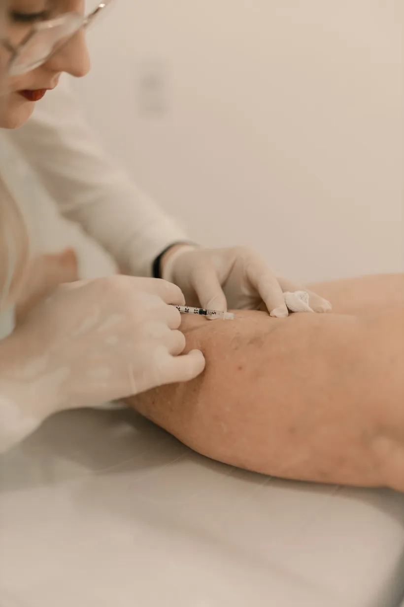

Cirugía de várices o sin cirugía: cómo decidir
Te hicieron el eco doppler y el resultado habla de reflujo en la vena safena, pero nadie te ha dicho todavía si eso significa cirugía. Es la pregunta que más se repite cuando el diagnóstico ya está sobre la mesa: cirugía de várices o sin cirugía, y quién decide eso en realidad.

Esto no lo decides tú sola con lo que ves en el espejo, ni tu médico con una regla idéntica para todas las pacientes: la cirugía de várices o sin cirugía depende del tipo de vena, de cómo está funcionando tu circulación por dentro y de qué tan comprometida está, algo que en Colombia se valora con las mismas herramientas que en cualquier lugar con cirugía vascular especializada.
Cirugía de várices o sin cirugía: qué opciones hay hoy
Antes de hablar de cuál conviene, aclaremos qué hay sobre la mesa. Son básicamente cuatro caminos, y no se excluyen entre sí:
- Medias de compresión y medidas generales: no eliminan la várice, pero alivian la pesadez y la hinchazón; suelen usarse mientras se decide el tratamiento, o como apoyo después de él.
- Escleroterapia: se inyecta una solución que cierra la vena desde dentro; funciona bien en arañitas vasculares y várices pequeñas o medianas.
- Ablación térmica con láser o radiofrecuencia: sella la vena con calor, guiada por ecografía; para buena parte de las guías de cirugía vascular actuales es hoy la primera opción cuando hay reflujo de la vena safena.
- Cirugía convencional (ligadura y stripping): retira la vena enferma por completo; sigue indicada cuando las opciones anteriores no son viables o ya no funcionaron.
Puedes revisar cada una con más calma en nuestra guía completa de tratamiento de várices sin cirugía. Aquí nos vamos a quedar en la pregunta de fondo: qué hace que el especialista te recomiende una y no otra.
Qué mira un especialista vascular en Medellín para decidir
La decisión no sale de una regla fija ni de lo que se ve a simple vista. Un especialista revisa, al menos, estos puntos antes de recomendarte un camino:
- El tipo y el tamaño de la vena: no es lo mismo una várice pequeña y superficial que un reflujo en el tronco de la vena safena, que suele necesitar ablación térmica o, si no es viable, cirugía.
- Si hay insuficiencia venosa de fondo: el eco doppler confirma si la válvula de la vena ya no cierra bien; sin ese dato, cualquier decisión es prematura.
- Los síntomas: dolor, pesadez, calambres o cambios en la piel pesan distinto que una preocupación puramente estética.
- Si ya hubo tratamientos previos: una várice que reaparece después de una escleroterapia o de una cirugía anterior puede necesitar un abordaje distinto al inicial.
- Tu situación general: el embarazo, por ejemplo, descarta cualquier intervención mientras dure, y deja solo la compresión como opción temporal.
Entre escleroterapia y láser, además, hay matices que no tienen que ver con la cirugía en absoluto. Si esa es tu duda puntual, la resolvemos aparte en escleroterapia vs láser para várices: ¿cuál elegir?.
Cuándo la cirugía convencional sigue siendo necesaria
La ablación térmica y la escleroterapia han ganado terreno como primera línea en buena parte de los casos, pero no en todos. La cirugía sigue teniendo sentido cuando la vena es demasiado tortuosa o superficial para pasar un catéter, cuando ya fallaron otros tratamientos, o cuando el compromiso es tan extenso que el especialista considera que retirar la vena por completo es, en ese caso puntual, la opción más adecuada. El costo también entra en esa conversación, y varía bastante según la vía que se elija: puedes ver de qué depende en precio del tratamiento de várices en Colombia: de qué depende.
Ninguna de estas opciones, ni siquiera la cirugía, cambia la tendencia de cada persona a formar várices nuevas. Todas tratan la vena que ya está ahí, no la causa que sigue generando otras.
Eso tampoco lo resuelve la cirugía más completa del mundo.
En Seravena no abrimos la conversación preguntando "¿cirugía o no?": preferimos mostrarte primero qué está pasando en tu circulación con el eco doppler y, desde ahí, explicarte por qué una vía tiene más sentido que otra para tu caso puntual, sin empujarte hacia la cirugía ni hacia evitarla por sistema. Es una diferencia de criterio que sostenemos porque la hemos visto funcionar mejor que decidir al revés, primero el método y después la vena.
Antes de tu próxima cita, anota en el celular tres datos: desde cuándo notas esa várice, si el dolor o la pesadez empeoran al final del día o después de estar muchas horas de pie, y si alguna vez te hablaron de reflujo en la vena safena. Llévalo junto con el resultado del eco doppler, si ya lo tienes. Con esa información, y no con la preferencia por evitar el bisturí o por evitar las inyecciones, se decide el camino real.
Si quieres resolver esa duda con una valoración completa, puedes conocer el tratamiento de várices en Medellín que ofrecemos en Seravena, o agendar una valoración directamente con nuestro equipo.
Preguntas frecuentes
¿Toda várice necesita cirugía?
No. Hoy la mayoría de las várices se tratan primero con escleroterapia o con ablación térmica con láser o radiofrecuencia, y la cirugía convencional queda para los casos en que esas opciones no son adecuadas o no funcionaron. Lo define el especialista después del eco doppler, no el tamaño que se ve a simple vista.
¿La escleroterapia o el láser sirven para cualquier várice?
No para todas. La escleroterapia suele reservarse para arañitas vasculares y várices pequeñas o medianas, mientras el láser o la radiofrecuencia se usan más en venas de mayor calibre con reflujo de la vena safena. El tipo y la profundidad de la vena determinan cuál aplica en cada caso.
¿Si elijo un tratamiento sin cirugía, la várice puede volver a salir?
Sí, puede pasar, igual que después de una cirugía: ningún tratamiento cambia la tendencia de cada persona a formar várices nuevas, solo trata las que ya existen. Por eso el control después del procedimiento importa tanto como elegirlo bien.